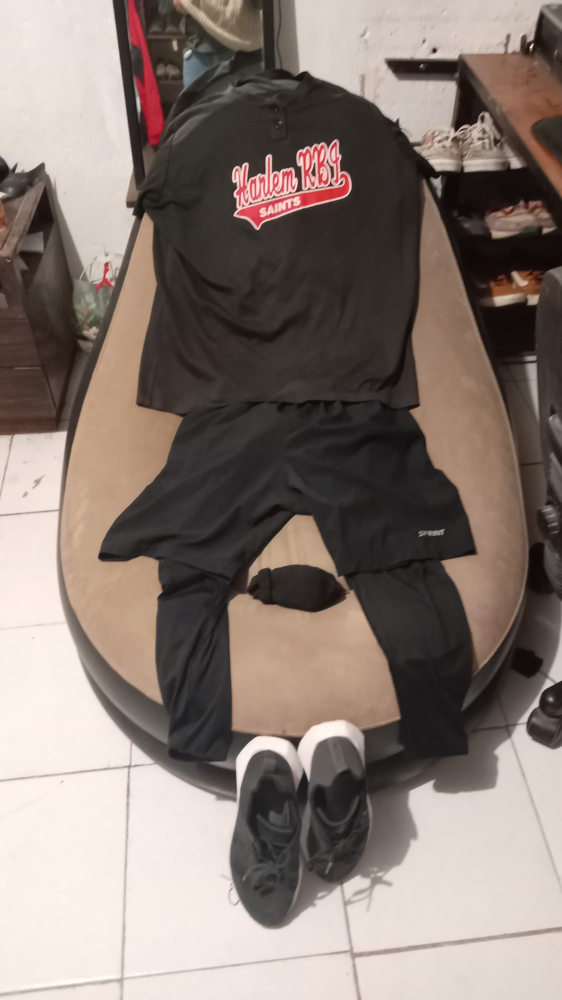

Mi Anahí: Esta semana fue una metáfora hermosa. Hablamos de cómo tú eres el sol y yo soy la luna. De cómo a veces parecemos destinados a no encontrarnos, a brillar en horarios distintos… y aun así, nos buscamos igual. Y ¿sabes qué? No me asusta. No me da miedo si no estamos siempre al mismo tiempo en el mismo lugar. Porque lo importante no es la sincronía perfecta… es la voluntad de querer coincidir. Yo te espero. Te pienso. Y tú, con esa forma tan única de querer, siempre vuelves con palabras dulces, con imágenes que me hacen sonreír, con frases que guardo como tesoros. Nos parecemos a los astros: podemos tener distancia, pero seguimos orbitando uno alrededor del otro. Y aunque no estemos cara a cara, te siento cerca. En tu voz cuando me deseas buenos días, en tu ternura cuando te disculpas por dormir poco, en cada vez que preguntas si ya comí o si descansé. En esta semana, la relación adoptó una metáfora hermosa: la comparación con el sol y la luna. Aunque nuestras energías y momentos pudieran ser diferentes, entendimos que ambos nos complementamos. La relación de Isaac y Anahí no es perfecta, pero tiene una belleza propia que reside en los contrastes. Como el sol y la luna, sus presencias no siempre eran simultáneas, pero siempre se encontraban en el mismo cielo, reflejándose en la luz del otro. Había una conexión tan profunda que ni la distancia ni el tiempo podían borrarla. Se deseaban, y aunque no pudieran estar siempre juntos, sabían que la promesa de estar allí el uno para el otro permanecía. Ese dia fuimos a punto sur a cenar juntitos, fue un lindo momento, te amo infinitamente y ese dia disfrute mucho bebé La frase emotiva de la semana, “Tú eres mi sol, incluso cuando no hay luz,” es una declaración de amor eterno y constante. Aunque las circunstancias no siempre sean las mejores, el amor sigue siendo la fuente de luz que da sentido a todo. Gracias por ser mi sol. Gracias por brillar, incluso en los días grises.
Momentos que derriten:
“Tú eres mi sol, incluso cuando no hay luz”
Momentos que irritan:
Ninguno, lo unico malito fue que tu mami se sintio mal y no fuimos al zoo, pero lo mejor fue que tu mamá se mejoro
